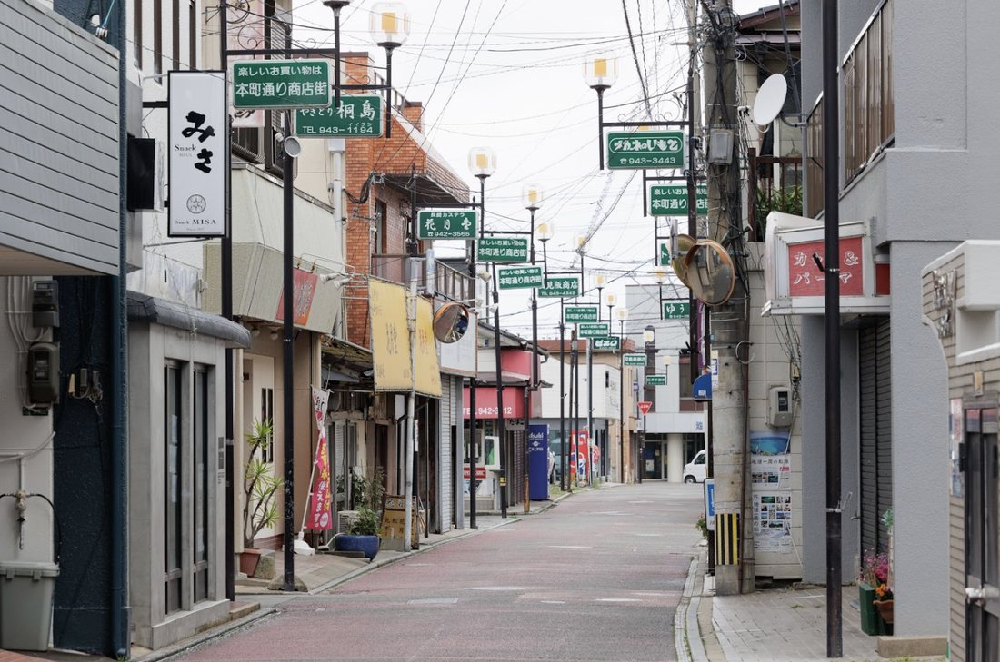
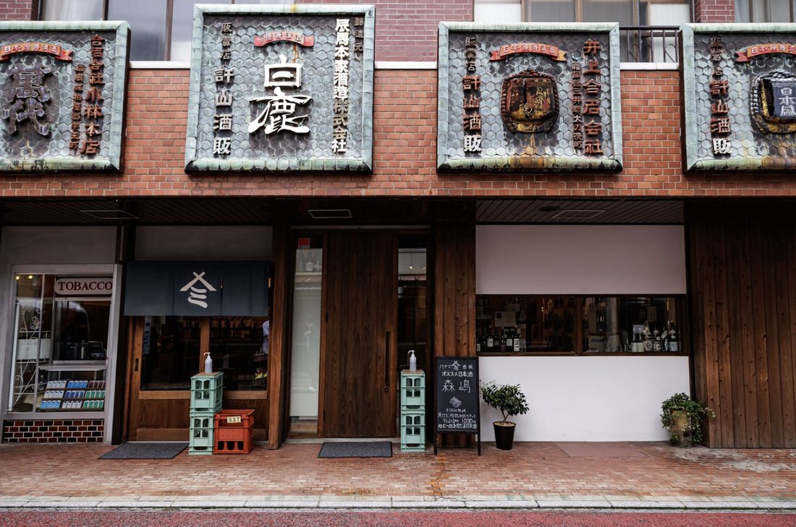
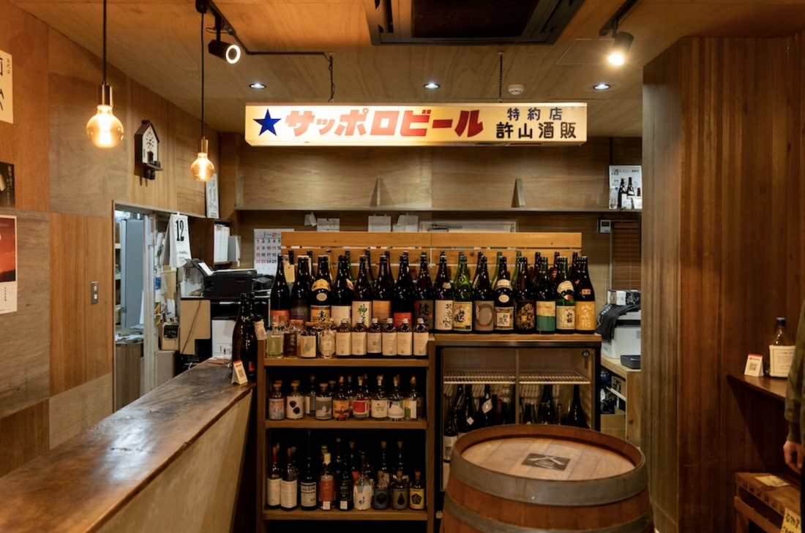
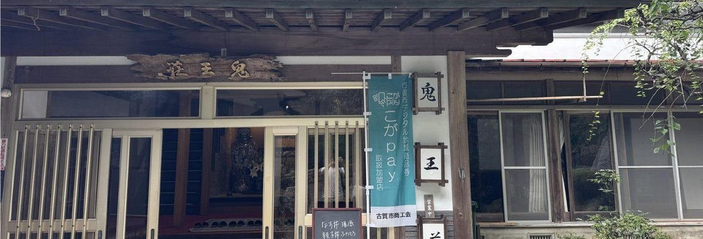
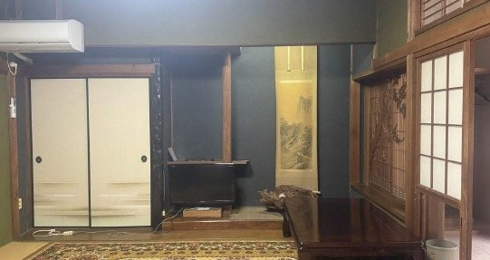
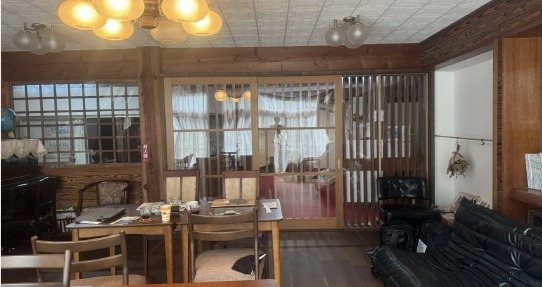
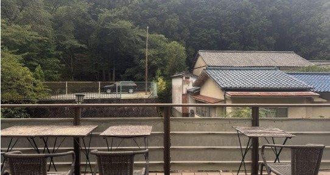

Retro streets and a town rebuilding itself. Koga runs from the mountains down to the sea, full of family-run shops and quiet valleys — you'll work alongside locals on things that actually matter to them, then unwind at a 71-year-old satoyama ryokan.
There's no strict schedule to Koga's chapter — work sessions, a walk through the old shotengai, a night of bar-hopping, conversations with locals, all centered around Ruruuru, the town's food-and-community hub, with the valley hot spring waiting at the end of each day.



Yakuoji-no-Yu Onioso is a 71-year-old hot-spring inn at the far end of the Yakuoji valley, and it's the only ryokan-style stay in the whole program — every other hub puts you in a modern hotel. Here you get tatami mats, shoji screens, mountain air, and birdsong with a stream running just outside.

The rooms keep their original layout: tatami flooring, sliding shoji doors, a low table, and a view out over the garden or the mountains around it.


